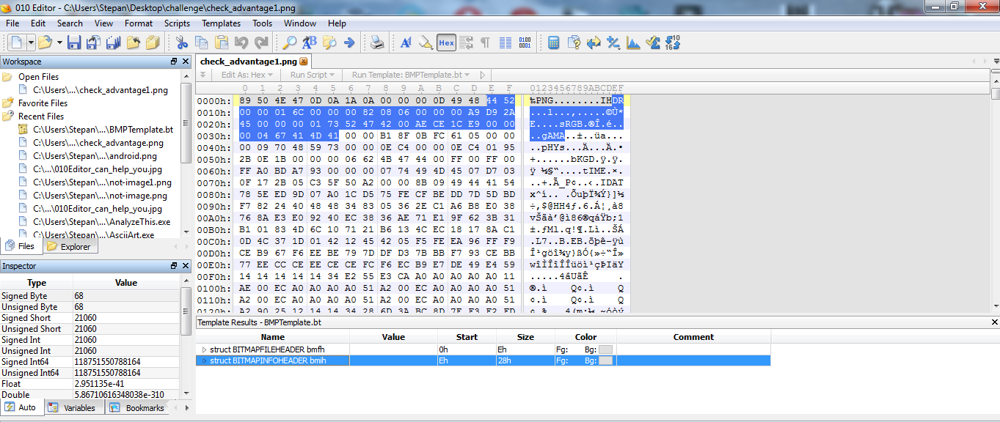
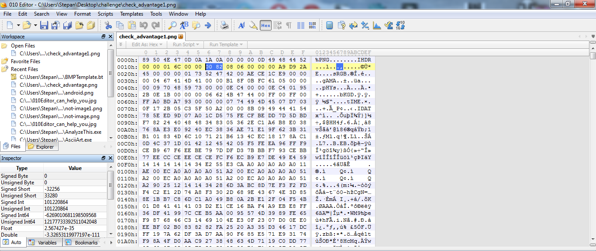
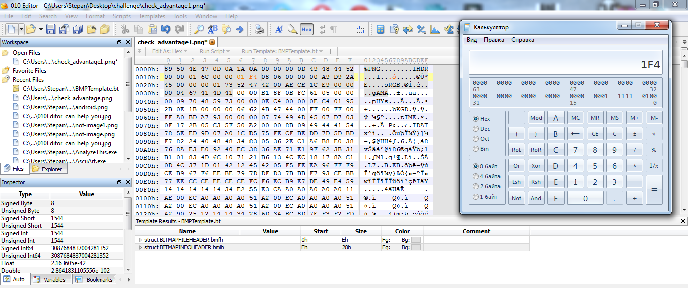
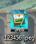
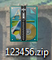
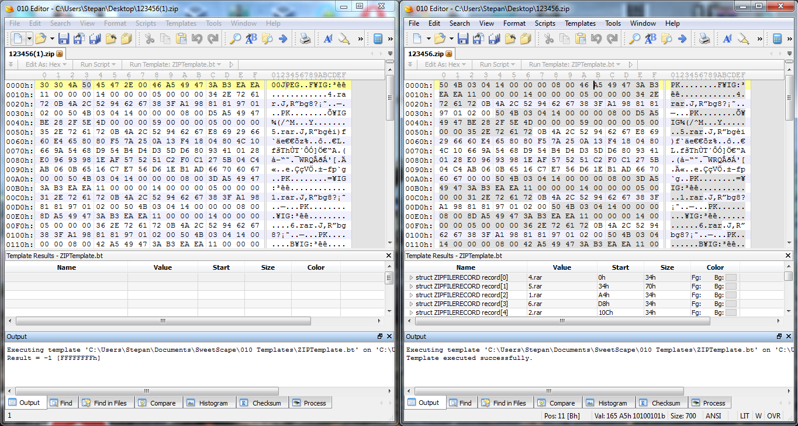

Категория FORENSIC. Автор: Раимов Хасан
Forensic (Computer forensic) - прикладная наука о раскрытии инцидентов, связанных с компьютерной информацией, исследовании цифровых доказательств, методах поиска, получения и закрепления таких доказательств. Форензика является подразделом криминалистики, является неотъемлемой частью в сфере ИБ.
Виды инцидентов:
• утечка конфиденциальной информации
• неправомерный доступ к информации
• удаление информации
• компрометация информации
• саботаж
• мошенничество с помощью ИТ систем
• использование активов компании в личных целях
• внешние атаки: DoS, DDoS, фишинг, перехват и подмена трафика
• размещение конфиденциальной/провокационной информации в сети Интернет
• взлом
• вирусные атаки
---
Forensic в CTF
В CTF forensic является одной из сложных категорий заданий, сравнимой с PWN. Эта категория охватывает довольно обширные категории знаний:
• Программирование
• ОС (Windows, Unix, BolgenOS)
• ФС (FAT, NTFS, Ext, etc.)
• Специфика типов файлов (JPEG, ELF, WAV, etc.)
• Сети (как минимум стек протоколов TCP/IP)
• Криптография
• Стеганография
• RE
• OSINT (Open Source INTelligence)
Виды задач, встречающиеся в тасках CTF:
• Восстановление данных (в том числе и удаленных)
• Анализ логов (журналы аудита, лог-файлы программ)
• Анализ сетевого трафика
• Поиск информации из открытых источников
Задачи могут перемежаться между собой, а также быть усложнены другими категориями знаний (криптография, RE, вирусология).
Каких-либо универсальных методов решения тасков категории forensic нет. Никогда не знаешь, что тебе за инцидент попадется и как тебе с ним париться справляться. Можно лишь выработать стратегию решения, например:
• Что за фигню объект мы имеем?
• Какие особенности имеет тип объекта?
• Какие отличия имеет объект от эталонного типа объекта?
• Какие методы решения существуют?
Эту стратегию следует зациклить до тех пор, пока задача не будет решена. Например, в исходных данных мы имеем дамп сетевого трафика. Проанализировав его, мы определили, что там передавались какие-то данные. После успешного (или не очень) извлечения мы получаем новый объект. Мы снова анализируем, что это за объект, какие он имеет особенности, что с ним не так и что с этим дальше делать.
Инструменты для решения задач forensic:
• Сетевые утилиты (Wireshark, Tshark, Scapy)
• Файловые утилиты (file, head, hex-редакторы)
• Утилиты для работы с ФС (TSK, Foremost, Autopsy)
• Крипто-утилиты (Cryptool)
• Графические редакторы (GIMP, PS)
• Аудиоредакторы (Audacity, AU)
• Языки программирования (Python, C, Brainfuck)
---
Пример задания
Один из тасков на соревнованиях PlaidCTF 2015 - Unknown.
Из исходных данных - файл непонятного содержания. Первое что приходит в голову - отдать файл утилите file (КЭП рядом). Результат:
such@n00b:/tmp$ file unknown_2348c21020c876be4ae7d9eb19f8500a
unknown_2348c21020c876be4ae7d9eb19f8500a: LaTeX document, ASCII text
Пробуем открыть редаткором LaTeXа - ничего вразумительного. Посмотрим любым текстовым редактором содержание файла, увидим следующее:
\begindata{raster,1}
2 0 65536 65536 0 0 640 400
bits 1 640 400
5a5c0b2f620b86f56c220475ab062
Погуглим значение первой строки (Нечто похожее на хедер какого-то файла). Первая же ссылка дает нам вполне вразумительную информацию о файле.
Format of ATK raster images
The raster data object writes a standard ATK data stream beginning with a \begindata line and ending with a \enddata line. Between these comes a header and possibly an image body.
The first line of the header looks like this:
2 0 65536 65536 0 0 484 603
What is 010 Editor?
010 Editor профессиональный текстовый редактор и шестнадцатеричный редактор предназначен для быстро и легко редактирования содержимого любого файла на вашем компьютере. Это программное обеспечение может редактировать простые текстовые файлы, включая Unicode файлов, пакетных файлов, C / C ++ исходного кода и т.д., но 010 Editor отличается в редактировании бинарных файлов. Двоичный файл представляет собой файл, который считывается компьютером (двоичный файл появится в искаженные символы, если открыт в текстовом редакторе). Шестигранный редактор это программа, которая позволяет просматривать и редактировать отдельные байты двоичных файлов и передовых шестнадцатеричных редакторов, включая 010 Editor также позволяет редактировать байты жестких дисков, флоппи-дисков, ключей памяти, флэш-накопителей, CD-ROM, процессы и т.д. Вот лишь некоторые из преимуществ использования 010 Editor :
1. Просмотр и редактирование любой двоичный файл на жестком диске (неограниченного размера файла) и текстовые файлы, включая файлы Unicode, C / C ++ исходный код, и т.д.
2. Уникальная технология Binary Templars позволяет понять любой двоичный формат файла.
3. Найти и устранить проблемы с жесткими дисками, флоппи-дисков, ключи памяти, флэш-накопителей, CD-ROM, процессов и т.п.
4. Анализ и редактировать текст и двоичные данные с мощными инструментами, включая Поиск, Заменить, Найти в файлах, Заменить в файлах, двоичного сравнения, Контрольная / хэш алгоритмов, гистограмм и т.д.
5. Мощный скриптовый движок позволяет автоматизировать многие задачи (язык очень похож на C).
6. Импорт и экспорт двоичных данных в различных форматах
Binary Templates
010 Уникальная технология редактора двоичных данных Шаблоны позволяют понять байт двоичного файла, представляя вас с файлом разобранного в структуру простой в использовании. Для примера того, как двоичный Шаблоны работа, открыть любой ZIP, BMP, WAV или файл на вашем компьютере и Templars Binary будет автоматически запускать файл. Бинарные Шаблоны легко написать на C / C ++ и может быть настроен на любой бинарный формат. Хранилище шаблонов, что другие люди написали доступно онлайн. Шестнадцатеричный редактор построен в 010 Editor можно загрузить файлы любого размера мгновенно, и имеет неограниченный потенциал всех операций редактирования. Редактор даже может скопировать или вставить огромные блоки данных между файлами мгновенно.
Using the Text Editor
The following keys are available when editing the file: Слева, справа, вверх, вниз - переместить курсор в любом направлении. Ctrl + Left, Ctrl + Right - перемещение курсора на следующую или последнюю группу байтов. Ctrl +, Ctrl + Down - прокрутка редактора вверх или вниз без перемещения курсора. Главная страница - переместить курсор на первый байт в строке. End - переместить курсор на последний байт в строке. Ctrl + Home - переместить курсор на первый байт в файле. Ctrl + End - переместить курсор в конец файла. Вставка - переключение Вставить и режим перезаписи. Удалить - удаляет текущий байт из файла. Tab - переключение между левым и правым областях редактирования. Alt + - переход к предыдущей сектора на жестком диске. Alt + Down - перемещает к следующему сектору на жестком диске.
Using the Inspector
Инспектор является мощным инструментом для изучения и редактирования двоичных данных в виде ряда различных типов данных. Кроме того, инспектор отображает список всех закладок в текущем файле плюс и список всех встроенных функций, которые могут быть использованы в скриптах или шаблонах. После двоичный Шаблон может работать на файл, результаты, как правило, отображается на панели Template результаты ; поочередно, результаты шаблона можно редактировать в инспекторе на вкладке Переменные. Показать или скрыть инспектор, нажав <Просмотр> инспектора пункта меню. Некоторые варианты инспектора доступны щелкнув правой кнопкой мыши с помощью в окне. Выберите опцию "Копировать" в меню, чтобы скопировать содержимое текущей ячейки в буфер обмена. Нажатие "Copy Row" будет копировать всю строку или столбец в буфер обмена, а вариант в "Копировать таблицу" будет копировать все данные (данные будут скопированы в формате с разделителями табуляции). Для некоторых столбцов Инспектора, цифры в колонке могут быть отображены в ряде различных числовых форматов, выбрав "Колонка Формат отображения" в меню правой кнопкой мыши, а затем выбрать "Hex ',' десятичной ',' OCTAL ', или "Двоичный". Нажмите пункт меню "Экспорт CSV ', чтобы написать текущую таблицу в файл CSV. Файл CSV (который выступает за значения, разделенные запятыми) представляет собой текстовый файл, в котором каждая ячейка записывается через запятую. Инспектор имеет четыре основные вкладки: Авто, переменные, закладки и функции. Обратите внимание, что небольшие левые и правые стрелки рядом с вкладками, возможно, потребуется нажать, чтобы просмотреть все вкладки инспектора.
Auto Inspector Tab
Когда вкладка Авто Инспектора выбрана, список типов данных будет отображаться в таблице. Когда файл открыт, двоичные данные, начиная с курсора превращается в каждой из различных типов данных и отображается в таблице. Когда курсор перемещается по файлу, инспектор будет изменяться в преобразованных данных. Если выбор сделан в текущем файле, данные преобразуются начиная с начала отбора. Следующие форматы поддерживаются в автоматическом инспектора: Подписано Байт - 8-разрядное число между -128 и 127 Байт без знака - 8-разрядное число в диапазоне от 0 до 255 Подписано Short - 16-разрядное число в диапазоне от -32768 до 32767 Без подписи Короткие - 16-разрядное число в диапазоне от 0 до 65535 Подписано Int - 32-разрядное число между -2147483648 и 2147483647 Без подписи Int - 32-разрядное число в диапазоне от 0 до 4294967295 Подписано Int64 - 64-разрядное число -9223372036854775808 и 9223372036854775807 Без подписи Int64 - 64-разрядное число между 0 и 18446744073709551615
Float - 32-разрядное число с плавающей запятой между 1.175494351e-38 и 3.402823466e38
Double - 64-бит с плавающей запятой между 2.2250738585072014e-308 и 1.7976931348623158e + 308
String - Отображает нулевым окончанием ASCII строку символов (ограничение 256 символов). Если строка редактируется и символы вставляются или удалены, когда в режиме вставки, байт будет вставлена или удалена из файла, но в режиме замены, нулевые байты будут записаны в файл, так что размер файла не изменится.
Unicode - Отображает строку с завершающим строку символов Unicode (ограничение в 128 символов).
Строки редактируются аналогичным образом к типу Строка данных.
DOSDATE - 16-битное значение, представляющее дату в DOS, используя формат "дд / мм / гггг" (обратите внимание, что М означает месяц, д означает день, и у означает год)
DOSTIME - 16-битное значение, представляющее время в DOS, используя формат "чч: мм: сс" (отметим, что ч означает час, м означает минуту, и с означает второй)
FILETIME - 64-битное значение, представляющая дату и время в Windows, используя формат 'MM / DD / YYYY HH: MM: SS'. FILETIME является 64-разрядное целое число, представляющее число 100-наносекундных интервалов, так как 01/01/1601 12:00 AM.
OLETIME - 64-битное значение, представляющая дату и время в OLE и Delphi, используя формат "MM / DD / YYYY HH: MM: SS '. OLETIME является 64-битные двойной, представляющий число дней с 12/30/1899 12:00 AM.
Time_t - 32-битное значение, представляющая дату и время в C, используя формат 'MM / DD / YYYY HH: MM: SS'. time_t это 32-битное целое число, представляющее количество секунд начиная с 01/01/1970 12:00 AM.
Чтобы отредактировать значение, щелкните левой кнопкой мыши или нажмите клавишу Ввод. Измените значение и нажмите Enter, чтобы зафиксировать изменения или Esc, чтобы отменить. Обратите внимание, что измененные байты будут отображаться как оранжевый при редактировании данных с использованием окно редактора Hex. "Изменить" "Отменить" или команды "Изменить" "Вернуть" может быть использован для отмены и повтора изменений, внесенных инспектора.
Еще одна функция
1. Добавление Расширенные закладки
2. Найти диалог
3. Заменить диалог
4. Найти в файлах Диалог
5. Заменить в файлах Диалог
6. Перейти Диалог
7. Использование Paste Special
8. Выбор диапазона
9. Установка и перезаписи Б
10. Установка и перезаписи файлов
11. Установка Размер файла
12. Свойства файла
Tools
Калькулятор 010 Editor снабжен калькулятором, который является полноправным калькулятором выражений с использованием синтаксиса, похожий на С. калькулятор может быть загружен нажав "Инструменты" или нажав клавишу F8.
Сравнить Dialog Инструмент сравнения файлов позволяет двоичного сравнения двух файлов или двух блоков данных для байт в байт различий. Обратите внимание, что это сравнение отличается, что большинство текстовых редакторов, которые только сравнить линию за линией. Доступом в сравнение файлов инструмент, нажав на "Инструменты> Сравнить файлы ..." вариант меню.
Hex Операции Инструмент Hex Операции обеспечивает ли простой способ применить математические операции с набором байтов. Откройте диалоговое окно Hex операций, нажав 'Tools> HEX Шефа опцию меню и выбора операции из списка.
Преобразование файлов Преобразование инструмент снабжен 010 Editor может быть использован для преобразования байт из одного набора символов в другой, а также может преобразовать символы перевода строки из одного типа к другому. Выберите "Инструменты> Конвертировать или нажмите Ctrl + T, чтобы открыть диалоговое Convert.
Гистограммы Гистограмма представляет собой график, который показывает, как часто определенные значения данных происходит в файл. Выберите опцию "Инструменты> Гистограмма" меню для расчета и отображения гистограммы для текущего файла.
Контрольная сумма / Алгоритмы хеширования Инструмент Контрольная сумма может быть использован, чтобы применить ряд контрольной суммы или хеш-алгоритмов в текущем файле. Запустите контрольную сумму инструмент, щелкнув "Инструменты> Контрольная сумма ... опцию меню.
База Конвертор База конвертер является простой в использовании инструмент для преобразования между десятичной, шестнадцатеричной, восьмеричной и двоичной, числовых форматов, а также ряд плавающих форматов и струнных. Нажмите "Инструменты> База конвертер ... опцию меню, чтобы отобразить окно базы конвертер.
Templates and Scripts
Одна из самых мощных функций 010 редактора является возможность запуска бинарных шаблонов и сценариев. Двоичные шаблона позволяют разложить бинарный файл в иерархической структуре. Шаблоны имеют похожий синтаксис для C / C ++ структур, но они работают в программе. Каждый раз, когда переменная объявлена в шаблон, переменная отображается в набор байтов в текущем файле. Например, следующий простой шаблон:
struct FILE {
struct HEADER {
char type[4];
int version;
int numRecords;
} header;
struct RECORD {
int employeeId;
char name[40];
float salary;
} record[ header.numRecords ];
} file;
Тип переменной отображается в байтах от 0 до 3 в файле, версия отображается на байтов от 4 до 7, а numRecords отображается на байт 8 до 11. Каждый раз, когда переменной производится, его значение считывается из файла , и в любое время переменной присваивается ее значение записывается в файл. Эти структуры отличаются от обычного C, так как они могут содержать управляющие операторы, такие как, если, или во время. Шаблоны выполняются подобным образом с переводчиком, где каждая строка исполняющего начиная с верхней части файла.
Файл сценария также имеет же синтаксис C и может быть использован для редактирования переменных, определенных в шаблоне. Например, the Script:
int i;
for( i = 0; i < file.header.numRecords; i++ )
file.record[i].salary \*= 2.0;
может быть использован, чтобы удвоить зарплату каждого сотрудника, используя шаблон. Сценарии могут быть использованы с шаблонами, или самостоятельно редактировать файлы или взаимодействовать с программой 010 Editor. Сценарии могут быть также использованы в качестве макросов для упрощения повторяющихся задач.
Шаблоны Написание
Бинарные Шаблоны, один из самых мощных функций 010 редактора, позволяют практически любой двоичный файл, который будет обработан в серии переменных. Шаблоны позволяют бинарные файлы следует понимать и отредактированы в гораздо легче . Каждый шаблон хранится в виде текстового файла с расширением ".bt" и могут быть отредактированы непосредственно в редакторе 010 . Шаблоны выполняются как переводчик будет работать, начиная с первой строки в файле и прогрессирует вниз. Когда шаблон выполнен файл разбивается на ряд переменных, а переменные отображаются в панели шаблонов результаты . Шаблоны могут быть настроены для автоматической загрузки и выполнения каждый раз, когда файл будет открыт . Для примера того, как шаблоны работы открыть любой ZIP, BMP, WAV или файл на вашем компьютере.
Declaring Template Variables
Объявление переменных в шаблонах выполняется похож на ANSI C и скриптов, но с важным отличием: каждый раз, когда переменная объявлена в шаблон, что переменная сопоставляется набор байтов в файле. For example, running the template:
char header[4];
int numRecords;
Special Attributes
Один или несколько специальных атрибутов могут быть определены после переменной внутри '<' and '>' скобки. Поддерживаются следующие атрибуты:
< format=hex|decimal|octal|binary,
fgcolor=<color>,
bgcolor=<color>,
comment="<string>",
open=true|false|suppress,
hidden=true|false,
read=<function_name>,
write=<function_name>
size=<number>|<function_name> >
Display Format
int crc <format=hex>;
int flags <format=binary>;
Colors
int id <fgcolor=cBlack, bgcolor=0x0000FF>;
The second way of coloring variables
SetForeColor( cRed );
int first; // will be colored red
int second; // will be colored red
SetForeColor( cNone );
int third; // will not be colored
Structs and Unions
struct myStruct {
int a;
int b;
int c;
};
Unions
union myUnion {
ushort s;
double d;
int i;
} u;
Structs with Arguments
struct VarSizeStruct (int arraySize)
{
int id;
int array[arraySize];
};
Editing with Scripts
Шаблоны предназначены только для разбора двоичного файла и не должны изменять любые данные. Чтобы изменить переменные, определенные из шаблона, используйте либо панель шаблона результатов или сценарий. Когда переменная объявлена в шаблон, оно отображается в набор байтов в файле. Чтение переменной вызывает байтов в файле для чтения и присваивания переменной вызывает байт файла должен быть изменен. Сценарии имеют доступ к любой из переменных, объявленных в шаблоне и могут использовать . для доступа к данным в структурах. For example, using the template:
struct myStruct {
int a;
int b;
int c;
} s1, s2;
a script could be written to swap the a variables:
int temp;
temp = s1.a;
s1.a = s2.a;
s2.a = temp;
Template Options
Добавление пользовательских шаблонов Пользовательские шаблоны могут быть добавлены на меню Шаблоны, используя диалоговое окно Параметры шаблона Когда шаблон выбирается из списка, его атрибуты будут отображаться в окне Параметры шаблона. Введите имя для шаблона в поле Имя. Это имя будет отображаться в меню шаблоны . Бинарные шаблоны обычно имеют расширение ".bt. Кнопка папки рядом с полем имя файла может быть использована, чтобы выбрать шаблон, используя диалоговое окно файла. Если маска вводится в поле Маска, этот шаблон будет автоматически загружается при открытии файла, который соответствует этой маске. Маски файлов могут содержать символы '*' и '?' чтобы указать специальные символы и несколько масок могут быть разделены запятыми. Если работать под нагрузкой переключатель включен, этот шаблон будет автоматически запускаться при загрузке. Когда Показать редактор на нагрузки переключателя установлен, шаблон будет открыт для редактирования в интерфейсе. Следующие шаблоны доступны по умолчанию:
1. BMP Template - Template used to parse bitmap files. Loads the 'BMPTemplate.bt' file.
2. ZIP Template - Template used to parse ZIP archives. Loads the 'ZIPTemplate.bt' file.
3. WAV Template - Template used to parse a WAV sound file. Loads the 'WAVTemplate.bt' file.
Working with Template Results
Панель Template Результаты отображаются переменные, которые были созданы путем запуска шаблона Binary на файл, и это панель показана прикреплен к нижней части окна редактора Hex (см Использование Hex Editor). Чтобы скрыть панель шаблона результатов нажмите на 'X' значок справа от названия шаблона Результаты или нажмите "Просмотр> Шаблон результатов" пункт меню, когда файл открыт. Если панель шаблона Результаты скрыта, можно показать, нажав на "Просмотр> Шаблон результатов" пункт меню или нажав кнопку под вертикальной полосой прокрутки и перетаскивание вверх. С другой стороны, переменные шаблона могут быть просмотрены, нажав на вкладке Переменные инспектора. Чтобы увидеть пример шаблона открыть любой ZIP, BMP, WAV или файл на вашем компьютере и шаблон двоичных будет автоматически запускать и отображаемые результаты. Все переменные отображаются в иерархической списка. Если переменная в списке имеет "+" рядом с ним, что переменная либо структура или массив. Нажатие плюс или дважды щелкнув переменную покажет всех членов в этой переменной. Если переменная имеет "-" рядом с ним щелкните минус или дважды щелкните переменную, чтобы скрыть все члены. Переменная также может быть открыта с помощью комбинации + правый Ctrl массива клавиш или Стрелка вправо, когда курсор находится в правой колонке. Переменная может быть закрыта с помощью комбинации клавиш Ctrl + Left Arrow или нажав стрелку влево, когда курсор находится в левом столбце. При выборе переменной, байты, которые соответствуют этой переменной выбирают в файле. Чтобы открыть всё суб-дерево ниже переменной, щелкните правой кнопкой мыши на переменной с помощью мыши и выберите Развернуть все опции меню . Чтобы найти переменную в списке, который соответствует позиции байта в файле, поместите курсор на байт в окно редактора Hex, а затем использовать "поиск> Перейти в шаблон переменной 'опцию меню, чтобы попытаться найти переменную (см Поиск Меню). Панель Template Результаты отображаются 6 различных столбцов: Столбец Имя указаны тип данных и имя переменной, а также будет включать в себя любые индексы массива. В столбце Значение отображается значение текущей переменной, как читать из файла. В столбце перечислены Начало начальный адрес переменной и столбца Размер перечисляет размер в байтах данных. В столбце Цвет перечислены цвет переднего плана (FG :) и цвет фона (BG :) переменной (это может быть изменен SetForeColor, SetBackColor или функций SetColor, перечисленные в интерфейс функций). В столбце Комментарий отображает строку, которая может быть установлена после объявления переменной, используя синтаксис '<комментарий = "<строка>"> ". Формат отображения для различных колонок могут быть изменены, щелкнув правой кнопкой на окне и выбрав опцию "Колонка Формат дисплея" в меню. Для столбца Value, если опция «Default» выбирается из меню "Колонка Формат", то формат отображения определяется при запуске шаблон из функций DisplayFormatHex, DisplayFormatDecimal, DisplayFormatOctal, DisplayFormatBinary, или с помощью '<= формат шестнадцатеричный | десятичный | восьмеричный | двоичный файл> ". Формат «Формат столбца Дисплей" для первого столбца может быть установлен в 'тип и название', чтобы показать как тип переменной и имя, или установить "Имя", чтобы просто отобразить имя переменной. Через контекстное меню адрес дисплей для столбца Пуск может быть установлен либо "Global" или "местных", используя опцию меню "Пуск адреса. В режиме "Global", адреса отображаются как обычные адреса от начала файла, но адреса вариант "местных" отображает адрес переменной в качестве смещение от родительского переменной. Чтобы изменить значение переменной, щелкните значение или нажмите в то время как ячейка в столбце Значение выбирается клавишу Enter (текущая ячейка обозначается пунктирной рамкой и могут быть перемещены с помощью клавиш управления курсором). Измените значение и нажмите Enter, чтобы зафиксировать изменения или Esc, чтобы отменить. Редактирование осуществляется аналогично Auto Inspector. Если не отображается значение в столбце Value, это означает, что переменная не может быть изменена. Чтобы очистить результаты шаблонов, щелкните правой кнопкой мыши панель шаблона результатов или вкладку Переменные Инспектора и выберите опцию "Очистить" в меню.
Пример использования 010Editor и шаблонов
Шаблон BMP
Открываем с помощью 010Editor и используем шаблон
Рисунок 1
Открываем через 010Editor и запускаем шаблон

Рисунок 2
Находим байты высоты

Рисунок 3
И меняем их, они подсвечиваются оранжевым цветом

Рисунок 4
Сохраняем

Рисунок 5
Появляется картинка с большим белым пространством
А вот истинное изображение

Рисунок 6
Шаблон
ZIP
Дан файл с расширением JPEG
Рисунок 7
Настоящее расширение файла ZIP

Рисунок 8
Открываем наш файл и рабочий ZIP файл в 010Editor, справа запускаем шаблон, выделяются часть отвечающая за расширение ZIP

Рисунок 9
Заменяем, левую часть

Рисунок 10
Для того чтобы добавить недостающие байты необходимо
нажать Insert Bytes

Риснунок 11
ZIP архив открывается теперь в нём находим архив с флагом!